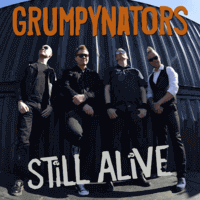

Grumpynators - Still Alive (Single, 2020)
01 - Still Alive (3:34)
© Grumpynators :: [Digital] © Mighty Music 2020
Notes
Review
237/366 (Project 366)
Motorbilly is what they call it. But, actually, it is very energetic and speed hard Rock, fueled by the power as such and the early old school heavy Metal sound. But not everything is so commonplace because of some touches and thoughts of modern Rockabilly, even punky one.. maybe even forms of Psychobilly or sides of Punk'n'Roll. And that sound is catchy enough. Mostly with sensible and unique lyrics.
"Still Alive" is somewhat life-affirming, energized, cheering up and waking up tune. With its a bit poppy airy-fairy singing despite its really gruffy rhythm and perky melody. Drums, bass, guitars, sing-a-long, epic chorus, chanthing. Even a cool guitar solo. Enough for a good song, but I think not enough to unleash their potential. This unstoppable rhythm, pace, impulse! Their previous work, the feeling of their upcoming "Still Alive" album, all this more reveals the understanding of Motorbilly and shows most of their original tones than only this single. But, all in all, very pretending song! Very, but not the best maybe. I liked their "Wonderland" album sound and mood. I would really like to hear their "Still Alive" album. I think it will be pretty, mature, strong one...
I tried to review some Punkabilly releases before, well, why not try to review kind of hard rockin' and heavy rollin' Motorbillies heads. It is uncompromisingly pushing sound, not thrash.. but mighty. I feel a kind of brooding mood and pensive tone playing in the background of these epic, often joyful, sometimes bitter tunes. In a way, it makes the sound true. These striking drums, heavy guitars, atmospheric double bass, impetuous vocals are memorable. Their very recognizable style (in particular the vocalist) is very characteristic. And, at the moment, I like it.